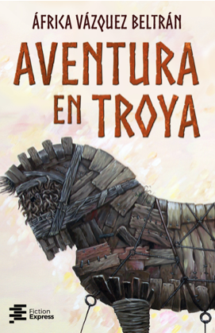
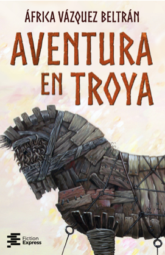

DISEÑO EDITORIAL
Tengo alrededor de tres años de experiencia en diseño editorial, tanto como parte del equipo de diseño gráfico de Fiction Express, una editorial digital, como en el campo de autopublicación. He tenido la oportunidad de trabajar en más de 35 proyectos de diseño de portadas de libros, sobretodo con libros juveniles y novela romántica, además de trabajar en la maquetación y preparación de proyectos (ya sea libros electrónicos o en papel) para impresión.
Pueden ver algunos proyectos editoriales freelance aquí (Anécdotas de Japón) y aquí (Iris Amador).
Una portada es una poderosa herramienta de marketing, fundamental para el éxito de un libro. El trabajo de una portada es conseguir que una obra llegue a los lectores adecuados: uno debe poder distinguir el género y el tono de un libro simplemente echando un vistazo a la cubierta. Para ello, la investigación de mercado, estar al día de las tendencias de portadas y familiarizarme con cada género es clave en mi proceso de trabajo.


 
